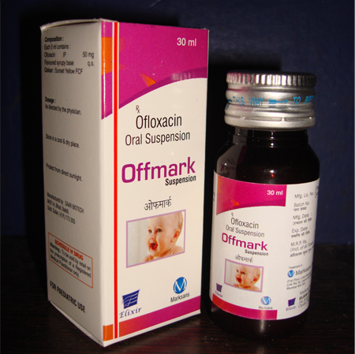

Indications:- Antibiotic.
-

Ofloxacin Suspension

Ofloxacin
SUSPENSION PRESENTATION:
Each 5 ml contains:
Ofloxacin U.S.P. 50 mg

Ofloxacin Suspension:
Ofloxacin is an antibiotic that belongs to the class of medications called quinolones. It is used to treat certain infections caused by bacteria. It is most commonly used to treat infections of the lung, urinary tract, and skin. It can also be used to treat certain prostate infections and sexually transmitted infections. Ofloxacin works by killing some types of bacteria that can cause these infections.

To reduce the development of drug-resistant bacteria and maintain the effectiveness of ofloxacin tablets and other antibacterial drugs, ofloxacin tablets should be used only to treat or prevent infections that are proven or strongly suspected to be caused by susceptible bacteria.
Ofloxacin tablets are indicated for the treatment of adults with mild to moderate infections (unless otherwise indicated) caused by susceptible strains of the designated microorganisms in the infections listed below.
- Acute bacterial exacerbations of chronic bronchitis due to Haemophilus influenzae orStreptococcus pneumoniae.
- Community-acquired Pneumonia due to Haemophilus influenzae or Streptococcus pneumoniae.
- Uncomplicated skin and skin structure infections due to methicillin-susceptible Staphylococcus aureus, Streptococcus pyogenes, or Proteus mirabilis.
- Acute, uncomplicated urethral and cervical gonorrhea due to Neisseria gonorrhoeae. Nongonococcal urethritis and cervicitis due to Chlamydia trachomatis.
- Mixed Infections of the urethra and cervix due to Chlamydia trachomatis and Neisseria gonorrhoeae.
- Acute pelvic inflammatory disease (including severe infection) due to Chlamydia trachomatisand/or Neisseria gonorrhoeae.
NOTE: If anaerobic microorganisms are suspected of contributing to the infection, appropriate therapy for anaerobic pathogens should be administered.
- Uncomplicated cystitis due to Citrobacter diversus, Enterobacter aerogenes, Escherichia coli, Klebsiella pneumoniae, Proteus mirabilis, or Pseudomonas aeruginosa.
- Complicated urinary tract infections due to Escherichia coli, Klebsiella pneumoniae, Proteus mirabilis.
- Prostatitis due to Escherichia coli.
NOTE: Culture and susceptibility tests should be performed before treatment in order to isolate and identify organisms causing the infection and to determine their susceptibility to ofloxacin. Therapy with ofloxacin may be initiated before results of these tests are known; once results become available, appropriate therapy should be continued.

Antacids, Sucralfate, Metal Cations, Multivitamins:
Quinolones form chelates with alkaline earth and transition metal cations.
Administration of quinolones with antacids containing calcium, magnesium, or aluminum, with sucralfate, with divalent or trivalent cations such as iron, or with multivitamins containing zinc or with didanosine may substantially interfere with the absorption of quinolones resulting in systemic levels considerably lower than desired. These agents should not be taken within the two-hour period before or within the two-hour period after ofloxacin administration. administration.
Cimetidine:
Cimetidine has demonstrated interference with the elimination of some quinolones. This interference has resulted in significant increases in half-life and AUC of some quinolones. The potential for interaction between ofloxacin and cimetidine has not been studied.
Cyclosporine:
Elevated serum levels of cyclosporine have been reported with concomitant use of cyclosporine with some other quinolones. The potential for interaction between ofloxacin and cyclosporine has not been studied.
Drugs metabolized by Cytochrome P450 enzymes:
Most quinolone antimicrobial drugs inhibit cytochrome P450 enzyme activity. This may result in a prolonged half-life for some drugs that are also metabolized by this system (e.g., cyclosporine, theophylline/methylxanthines, warfarin) when coadministered with quinolones. The extent of this inhibition varies among different quinolones.
Non-steroidal anti-inflammatory drugs:
The concomitant administration of a non-steroidal anti-inflammatory drug with a quinolone, including ofloxacin, may increase the risk of CNS stimulation and convulsive seizures.
Probenecid:
The concomitant use of probenecid with certain other quinolones has been reported to affect renal tubular secretion. The effect of probenecid on the elimination of ofloxacin has not been studied.
Theophylline:
Steady-state theophylline levels may increase when ofloxacin and theophylline are administered concurrently. As with other quinolones, concomitant administration of ofloxacin may prolong the half-life of theophylline, elevate serum theophylline levels, and increase the risk of theophylline-related adverse reactions. Theophylline levels should be closely monitored and theophylline dosage adjustments made, if appropriate, when ofloxacin is co-administered. Adverse reactions (including seizures) may occur with or without an elevation in the serum theophylline level.
Warfarin:
Some quinolones have been reported to enhance the effects of the oral anticoagulant warfarin or its derivatives. Therefore, if a quinolone antimicrobial is administered concomitantly with warfarin or its derivatives, the prothrombin time or other suitable coagulation test should be closely monitored.
Antidiabetic agents:
(e.g., insulin, glyburide/glibenclamide) Since disturbances of blood glucose, including hyperglycemia and hypoglycemia, have been reported in patients treated concurrently with quinolones and an antidiabetic agent, careful monitoring of blood glucose is recommended when these agents are used concomitantly.
Interaction with Laboratory or Diagnostic Testing:
Some quinolones, including ofloxacin, may produce false-positive urinescreening results for opiates using commercially available immunoassay kits. Confirmation of positive opiate screens by more specific methods may be necessary.
Pregnancy:
There are, however, no adequate and well-controlled studies in pregnant women. Ofloxacin should be used during pregnancy only if the potential benefit justifies the potential risk to the fetus.
Lactation:
In lactating females, a single oral 200-mg dose of ofloxacin resulted in concentrations of ofloxacin in milk that were similar to those found in plasma. Because of the potential for serious adverse reactions from ofloxacin in nursing infants, a decision should be made whether to discontinue nursing or to discontinue the drug, taking into account the importance of the drug to the mother.
Pediatric Use:
Safety and effectiveness in pediatric patients and adolescents below the age of 18 years have not been established. Ofloxacin causes arthropathy (arthrosis) and osteochondrosis in juvenile animals of several species.
Geriatric Use:
Dosage adjustment is necessary for elderly patients with impaired renal function (creatinine clearance rate ≤ 50 mL/min) due to reduced clearance of ofloxacin. Elderly patients may be more sensitive to drug-associated effects on the QT interval. Therefore, precaution should be taken when using ofloxacin with concomitant drugs that can result in prolongation of the QT interval (e.g. Class IA or Class III antiarrhythmics) or in patients with risk factors for Torsade de pointes (e.g. known QT prolongation, uncorrected hypokalemia). Geriatric patients are at increased risk for developing severe tendon disorders including tendon rupture when being treated with a fluoroquinolone such as ofloxacin. This risk is further increased in patients receiving concomitant corticosteroid therapy. Tendinitis or tendon rupture can involves the Achilles, hand, shoulder, or other tendon sites and can occur during or after completion of therapy; cases occurring up to several months after fluoroquinolone treatment have been reported. Caution should be used when prescribing ofloxacin to elderly patients especially those on corticosteroids. Patients should be informed of this potential side effect and advised to discontinue ofloxacin and contact their healthcare provider if any symptoms of tendinitis or tendon rupture occur.


Ofloxacin is a quinolone antimicrobial agent. The mechanism of action of ofloxacin and other fluoroquinolone antimicrobials involves inhibition of bacterial topoisomerase IV and DNA gyrase (both of which are type II topoisomerases), enzymes required for DNA replication, transcription, repair and recombination.Ofloxacin has in vitro activity against a wide range of gram-negative and grampositive microorganisms. Ofloxacin is often bactericidal at concentrations equal to or slightly greater than inhibitory concentrations.
Fluoroquinolones, including ofloxacin, differ in chemical structure and mode of action from aminoglycosides, macrolides and β-lactam antibiotics, including penicillins. Fluoroquinolones may, therefore, be active against bacteria resistant to these antimicrobials.
Ofloxacin has been shown to be active against most strains of the following microorganisms both in vitro and in clinical infections
Aerobic Gram-positive microorganisms
Staphylococcus aureus (methicillin-susceptible strains)
Streptococcus pneumoniae (penicillin-susceptible strains)
Streptococcus pyogenes
Aerobic Gram-negative microorganisms
Citrobacter (diversus) koseri
Enterobacter aerogenes
Escherichia coli
Haemophilus influenzae
Klebsiella pneumoniae
Neisseria gonorrhoeae
Proteus mirabilis
Pseudomonas aeruginosaAs with other drugs in this class, some strains of Pseudomonas aeruginosa may
develop resistance fairly rapidly during treatment with ofloxacin.
Other microorganisms
Chlamydia trachomatis
Ofloxacin is not active against Treponema pallidum Many strains of other streptococcal species, Enterococcus species, and anaerobes are resistant to ofloxacin

Following oral administration, the bioavailability of ofloxacin in the tablet formulation is approximately 98%. Maximum serum concentrations are achieved one to two hours after an oral dose.The amount of drug absorbed increases proportionately with the dose. Ofloxacin has biphasic elimination. Following multiple oral doses at steady-state administration, the half-lives are approximately 4-5 hours and 20-25 hours. However, the longer half-life represents less than 5% of the total AUC. Accumulation at steady-state can be estimated using a half-life of 9 hours. The total clearance and volume of distribution are approximately similar after single or multiple doses. Elimination is mainly by renal excretion.
Approximately 32% of the drug in plasma is protein bound.
Following oral administration of recommended therapeutic doses, ofloxacin has been detected in blister fluid, cervix, lung tissue, ovary, prostatic fluid, prostatic tissue, skin, and sputum. The mean concentration of ofloxacin in each of these various body fluids and tissues after one or more doses was 0.8 to 1.5 times the concurrent plasma level. Inadequate data are presently available on the distribution or levels of ofloxacin in the cerebrospinal fluid or brain tissue. Ofloxacin has a pyridobenzoxazine ring that appears to decrease the extent of parent compound metabolism. Between 65% and 80% of an administered oral dose of ofloxacin is excreted unchanged via the kidneys within 48 hours of dosing. Studies indicate that less than 5% of an administered dose is recovered in the urine as the desmethyl or N-oxide metabolites. Four to eight percent of an ofloxacin dose is excreted in the feces. This indicates a small degree of biliary excretion of ofloxacin.
The administration of ofloxacin with food does not affect the Cmax and AUC∞ of the drug, but Tmax is prolonged.Clearance of ofloxacin is reduced in patients with impaired renal function (creatinine clearance rate ≤ 50 mL/min), and dosage adjustment is necessary.

In clinical trials, the most frequently reported adverse events, regardless of relationship to drug, were: nausea 10%, headache 9%, insomnia 7%, external genital pruritus in women 6%, dizziness 5%, vaginitis 5%, diarrhea 4%, vomiting 4%.
In clinical trials, the following events, regardless of relationship to drug, occurred in 1 to 3% of patients:Abdominal pain and cramps, chest pain, decreased appetite, dry mouth, dysgeusia, fatigue, flatulence, gastrointestinal distress, nervousness, pharyngitis, pruritus, fever, rash, sleep disorders, somnolence, trunk pain, vaginal discharge, visual disturbances, and constipation.

Ofloxacin tablets is contraindicated in persons with a history of hypersensitivity associated with the use of ofloxacin or any member of the quinolone group of antimicrobial agents.

Fluoroquinolones, including ofloxacin, are associated with an increased risk of tendinitis and tendon rupture in all ages. This adverse reaction most frequently involves the Achilles tendon, and rupture of the Achilles tendon may require surgical repair. Tendinitis and tendon rupture in the rotator cuff (the shoulder), the hand, the biceps, the thumb, and other tendon sites have also been reported. Tendinitis and tendon rupture have also occurred in patients taking fluoroquinolones who do not have the above risk factors.
Ofloxacin should be discontinued if the patient experiences pain, swelling, inflammation or rupture of a tendon. Patients should be advised to rest at the first sign of tendinitis or tendon rupture, and to contact their healthcare provider regarding changing to a non-quinolone antimicrobial drug.
The safety and efficacy of ofloxacin in pediatric patients and adolescents (under the age of 18 years), pregnant women, and lactating women have not been established.
Convulsions, increased intracranial pressure, and toxic psychosis have been reported in patients receiving quinolones, including ofloxacin. Quinolones, including ofloxacin, may also cause central nervous system stimulation which may lead to: tremors, restlessness/agitation, nervousness/anxiety, lightheadedness, confusion, hallucinations, paranoia and depression, nightmares, insomnia, and rarely suicidal thoughts or acts. These reactions may occur following the first dose. If these reactions occur in patients receiving ofloxacin, the drug should be discontinued and appropriate measures instituted.
Insomnia may be more common with ofloxacin than some other products in the quinolone class. As with all quinolones, ofloxacin should be used with caution in patients with a known or suspected CNS disorder that may predispose to seizures or lower the seizure threshold (e.g., severe cerebral arteriosclerosis, epilepsy) or in the presence of other risk factors that may predispose to seizures or lower the seizure threshold (e.g., certain drug therapy, renal Clinical manifestations may include one or more of the following:
fever, rash, or severe dermatologic reactions (e.g., toxic epidermal necrolysis, Stevens-Johnson Syndrome); vasculitis; arthralgia; myalgia; serum sickness; allergic pneumonitis; interstitial nephritis; acute renal insufficiency or failure; hepatitis; jaundice; acute hepatic necrosis or failure; anemia, including hemolytic and aplastic; thrombocytopenia, including thrombotic thrombocytopenic purpura; leukopenia; agranulocytosis; pancytopenia; and/or other hematologic abnormalities.
The drug should be discontinued immediately at the first appearance of skin rash, jaundice, or any other sign of hypersensitivity and supportive measures instituted Ofloxacin should be discontinued if the patient experiences symptoms of neuropathy including pain, burning, tingling, numbness, and/or weakness or other alterations of sensation including light touch, pain, temperature, positionsense, and vibratory sensation in order to prevent the development of an irreversible condition.
Treatment with antibacterial agents alters the normal flora of the colon leading to overgrowth of C. difficile.C. difficile produces toxins A and B which contribute to the development of CDAD. Hypertoxin producing strains of C. difficile cause increased morbidity and mortality, as these infections can be refractory to antimicrobial therapy and may require colectomy. CDAD must be considered in all patients who present with diarrhea following antibiotic use. Careful medical history is necessary since
Ofloxacin has not been shown to be effective in the treatment of syphilis.Antimicrobial agents used in high doses for short periods of time to treat gonorrhea may mask or delay the symptoms of incubating syphilis. All patients with gonorrhea should have a serologic test for syphilis at the time of diagnosis. Patients treated with ofloxacin for gonorrhea should have a follow-up serologic test for syphilis after three months and, if positive, treatment with an appropriate antimicrobial should be instituted.

Prescribing ofloxacin tablets in the absence of a proven or strongly suspected bacterial infection or a prophylactic indication is unlikely to provide benefit to the patient and increases the risk of the development of drug-resistant bacteria.
Adequate hydration of patients receiving ofloxacin should be maintained to prevent the formation of a highly concentrated urine.
Administer ofloxacin with caution in the presence of renal or hepatic insufficiency/impairment. In patients with known or suspected renal or hepatic insufficiency/impairment, careful clinical observation and appropriate laboratory studies should be performed prior to and during therapy since elimination of ofloxacin may be reduced. In patients with impaired renal function (creatinine clearance ≤ 50 mg/mL), alteration of the dosage regimen is necessary.
Moderate to severe photosensitivity/phototoxicity reactions, the latter of which may manifest as exaggerated sunburn reactions (e.g., burning, erythema, exudation, vesicles, blistering, edema) involving areas exposed to light (typically the face, "V" area of the neck, extensor surfaces of the forearms, dorsa of the hands), can be associated with the use of quinolones after sun or UV light exposure. Therefore, excessive exposure to these sources of light should be avoided. Drug therapy should be discontinued if photosensitivity/phototoxicity occurs.
As with other quinolones, ofloxacin should be used with caution in any patient with a known or suspected CNS disorder that may predispose to seizures or lower the seizure threshold (e.g., severe cerebral arteriosclerosis, epilepsy) or in the presence of other risk factors that may predispose to seizures or lower the seizure threshold (e.g., certain drug therapy, renal dysfunction).
A possible interaction between oral hypoglycemic drugs (e.g., glyburide/glibenclamide) or with insulin and fluoroquinolone antimicrobial agents have been reported resulting in a potentiation of the hypoglycemic action of these drugs. The mechanism for this interaction is not known. If a hypoglycemic reaction occurs in a patient being treated with ofloxacin, discontinue ofloxacin immediately and consult a physician.
As with any potent drug, periodic assessment of organ system functions, including renal, hepatic, and hematopoietic, is advisable during prolonged therapy.

Information on overdosage with ofloxacin is limited. One incident of accidental overdosage has been reported. In this case, an adult female received 3 grams of ofloxacin intravenously over 45 minutes. A blood sample obtained 15 minutes after the completion of the infusion revealed an ofloxacin level of 39.3 μg/mL. In 7 h, the level had fallen to 16.2 μg/mL, and by 24 h to 2.7 μg/mL. During the infusion, the patient developed drowsiness, nausea, dizziness, hot and cold flushes, subjective facial swelling and numbness, slurring of speech, and mild to moderate disorientation. All complaints except the dizziness subsided within 1 h after discontinuation of the infusion. The dizziness, most bothersome while standing, resolved in approximately 9 h. Laboratory testing reportedly revealed no clinically significant changes in routine parameters in this patient. In the event of an acute overdose, the stomach should be emptied. The patient should be observed and appropriate hydration maintained. Ofloxacin is not efficiently removed by hemodialysis or peritoneal dialysis.

Store at room temperature, 15-30° C (59-86°F). Keep away from moisture.